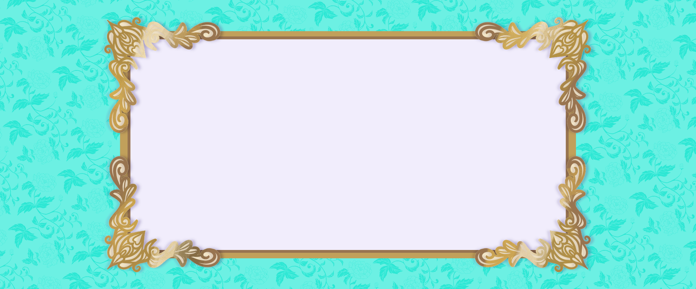

Sobre a marca
Apresentação
Polychromatica. Arte com alma, cor e magia.
Sou Poliana Melo, artista visual e criadora da Polychromatica, onde personagens ganham vida, histórias despertam emoções e a imaginação encontra o extraordinário. Inspirada pela fantasia e pelo fascínio por personagens que parecem guardar mundos inteiros dentro de si, crio imagens que convidam a olhar além do visível e encontrar magia no inesperado.
Portfólio
Minhas criações
Explore as obras e selecione uma imagem para visualizá-la em tamanho ampliado.
Sobre Mim
Olá! Sou Poliana Melo, artista paraibana e criadora da Polychromatica.
Polychromatica é uma marca independente de arte autoral movida pelo fascínio por personagens, suas histórias e as emoções que eles despertam.
Meu trabalho transita entre o estilizado e o semi-realista, explorando personagens expressivos, figurinos marcantes e atmosferas que convidam o olhar a permanecer um pouco mais. Meu repertório visual é alimentado por referências variadas, com um interesse especial pela expressividade dos personagens e pela riqueza estética de figurinos que combinam influências históricas e contemporâneas.
Entre meus universos criativos favoritos estão a fantasia sombria e os contos de fadas, especialmente nas minhas criações originais. Gosto das possibilidades que esses mundos oferecem para explorar contrastes, mistérios e personagens que parecem guardar histórias próprias.
Mais do que seguir uma única estética, busco criar imagens capazes de despertar identificação, curiosidade e conexão emocional. Seja ilustrando personagens de universos que admiro ou desenvolvendo minhas próprias ideias, quero que cada obra tenha personalidade e encontre espaço na imaginação de quem a observa.
A Polychromatica é o lugar onde essas referências, interesses e possibilidades se encontram: um universo de arte autoral que celebra a imaginação, acolhe o inesperado e encontra, no extraordinário, novas maneiras de despertar emoções e contar histórias por meio de imagens.
Obrigada por conhecer meu universo criativo.
Vamos conversar?
Contatos
Para conhecer mais sobre meu trabalho, conversar sobre projetos ou propor uma colaboração, entre em contato.